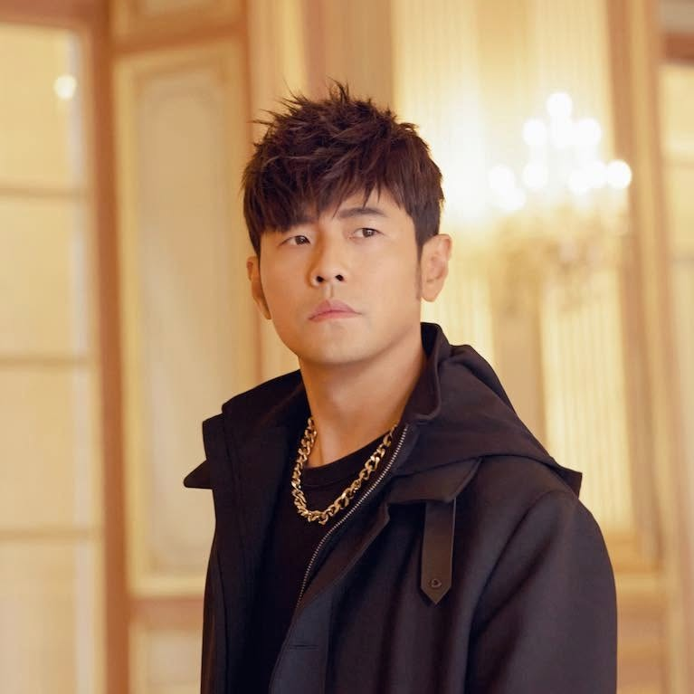

周杰伦 Jay Chou


- 周杰伦（英语：Jay Chou，1979年1月18日—），台湾男歌手、词曲作家、演员及制作人。其音乐风行于大中华地区及全球各地的华人社群，并对华语乐坛产生重大影响，有“华语流行天王”之美誉。
- 自2000年发行首张专辑《杰伦》出道至今，周杰伦多次获得华语乐坛重要的音乐奖项，包括15座台湾金曲奖和2座MTV亚洲大奖。2003年登上亚洲版《时代》杂志的封面，其后至今开展了8次世界巡演。2009年获美国CNN评选为亚洲最具影响力的25位人物之一。2016年起，他曾担任三季《中国好声音》系列导师。2022年推出的专辑《最伟大的作品》夺下了国际唱片协会IFPI认证全球最畅销专辑冠军。
- 在音乐以外，周杰伦自从演出《头文字D》之后就开始了电影的事业，从此涉足各类的电影企划，并创立专属的唱片和经纪公司杰威尔音乐。
喜欢的歌曲
- 《晴天》
- 《青花瓷》
- 《告白气球》
social media


official website